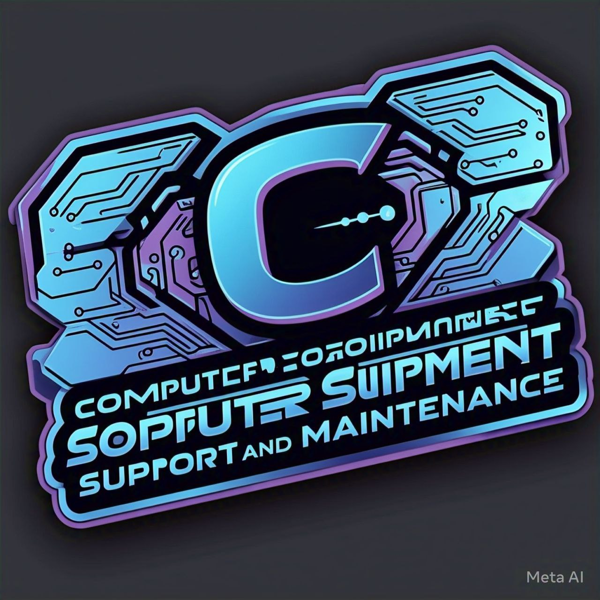

Soporte a Distancia 426
Inicio
Nosotros
Descargas
Contacto
Encuéntranos en ...
Descargas
Simulador de ensamble de equipo de cómputo.
Plantilla de Bitacora de Soporte técnico.
Guías de mantenimiento:
Guía para hacer booteable una usb.
Materiales para mantenimiento preventivo.
Guía para realizar mantenimiento preventivo.
Guía para solución de errores comunes.
Asistencia técnica de manera remota.
Desarrollador Web || César Rangel